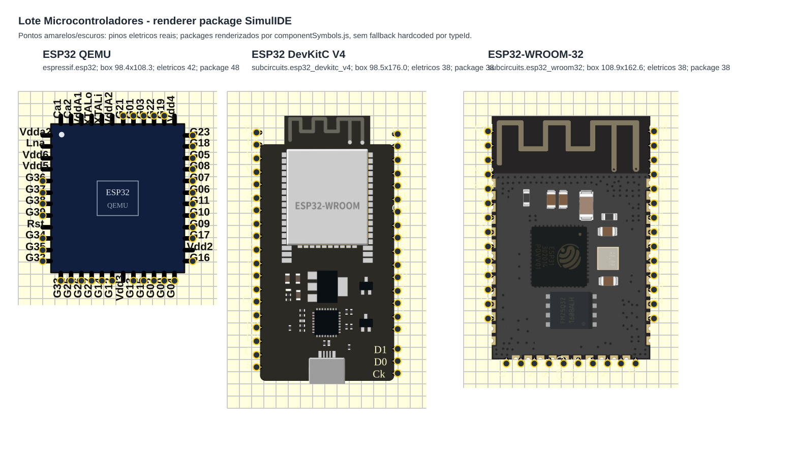

Microcontroladores - evidencia visual e funcional
Render gerado pelo build compilado de extension/out-webview/componentSymbols.js, registrando os packages reais dos manifests.
Fonte SimulIDE: Chip::paint, Pin::paint e PackagePin::paint localizados; data/esp32/esp32.package nao localizado localmente.

[
{
"typeId": "espressif.esp32",
"box": {
"width": 98.3529411764706,
"height": 108.31578947368422
},
"electricalPins": 42,
"packagePins": 48,
"missingElectricalLeads": [
"GPIO20",
"GPIO24",
"GPIO28",
"GPIO29",
"GPIO30",
"GPIO31",
"UART0_RX",
"UART0_TX"
],
"decorativeOrNcPins": [
"deco_Ca1",
"deco_Ca2",
"deco_VddA1",
"deco_XTALo",
"deco_XTALi",
"deco_VddA2",
"deco_Vdd4",
"deco_Vdd2",
"deco_Vdd3",
"deco_Vdda2",
"deco_Lna",
"deco_Vdd6",
"deco_Vdd5",
"RST"
],
"pinMarker": null
},
{
"typeId": "subcircuits.esp32_devkitc_v4",
"box": {
"width": 98.49000000000001,
"height": 176
},
"electricalPins": 38,
"packagePins": 38,
"missingElectricalLeads": [],
"decorativeOrNcPins": [],
"pinMarker": "packagePin"
},
{
"typeId": "subcircuits.esp32_wroom32",
"box": {
"width": 108.85131195335278,
"height": 162.6283367556468
},
"electricalPins": 38,
"packagePins": 38,
"missingElectricalLeads": [],
"decorativeOrNcPins": [],
"pinMarker": "packagePin"
}
]